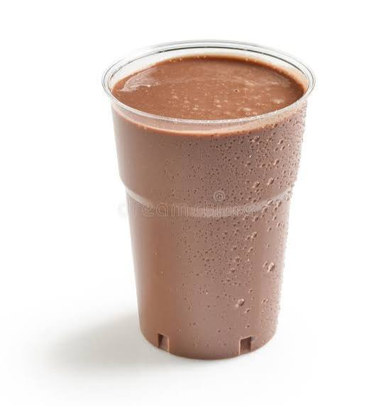
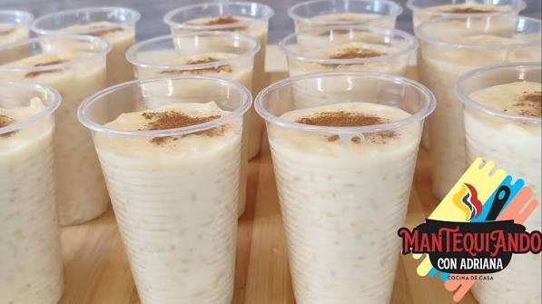
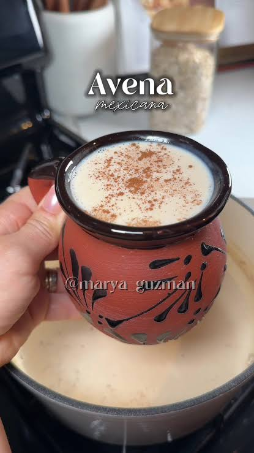

Empieza la mañana con la mejor energía disfrutando de nuestras horneadas artesanales saladas y aperitivos mañaneros.

Chocolate con leche
Disfruta de un chocolate caliente reconfortante, preparado artesanalmente con cacao seleccionado, un toque secreto y aromático de cáscara de plátano, azúcar al gusto, agua y leche deslactosada. Suave, cremosa y perfecta para tu desayuno diario.
Bs. 2.50

Arroz conn leche
Disfruta de un delicioso arroz con leche artesanal en un formato de vasito individual, ideal para tus meriendas o eventos. Elaborado con ingredientes seleccionados y un toque perfecto de dulzura, es un postre ligero, fresco y espolvoreado con canela que a todos les encanta.
Bs. 3.00

Avena con leche
Disfruta de una bebida tradicional, nutritiva y cremosa elaborada a base de avena cocida a fuego lento. Servida bien calentita y espolvoreada con canela aromática en la superficie.
Bs. 3.50